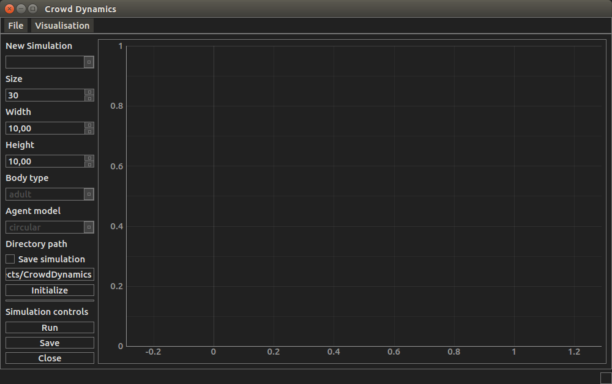

7.1. User Interface¶
7.1.1. Graphics¶
Graphical user interface and simulation graphics for crowd dynamics. Main window is created
- PyQt4 [pyqt4]
- Layout for the main window is created by using Qt designer
- Graphics are implemented using pyqtgraph [pyqtgraph].
Design of the gui is greatly inspired and aided by the design of [rtgraph].
7.1.2. Communication¶
Communication with simulation data.
7.1.3. Input/Output¶
Simulation data is stored to hdf5 file.
| [pyqt4] | Hess, D., & Summerfield, M. (2013). PyQt Whitepaper. |
| [pyqtgraph] | Campagnola, L. (2014). PyQtGraph - Scientific Graphics and GUI Library for Python. Posledn{’i} Aktualizace. article. Retrieved from http://www.pyqtgraph.org/ |
| [rtgraph] | Sepúlveda, S., Reyes, P., & Weinstein, A. (2015). Visualizing physiological signals in real-time. PROC. OF THE 14th PYTHON IN SCIENCE CONF. Retrieved from https://github.com/ssepulveda/RTGraph |